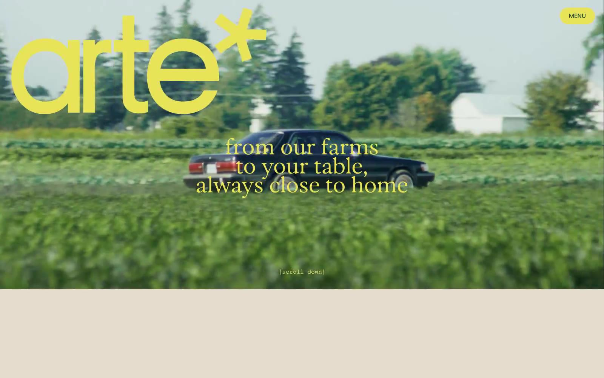

arte* 的 Design.md 主题展示，围绕电商零售、暖色调、浅色界面、消费品牌组织页面。
Explore arte*'s light E-commerce design system: Amber Ochre #ab5700, Pale Sage #e5dccd colors, Poppins, Parafina typography, and DESIGN.md for AI agents.

#ab5700: #ab5700#e5dccd: #e5dccd#7997ff: #7997ff#e8e359: #e8e359#d99623: #d99623#568037: #568037#3d549c: #3d549c#103d26: #103d26#e99686: #e99686#214534: #214534#5e335d: #5e335d#c42331: #c42331display: Interbody: Intermono: ui-monospacehints: Inter,ui-monospace